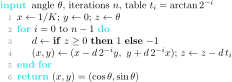

, each of which multiplies by
, each of which multiplies by  , so after
, so after  (or magnitude and ) to
(or magnitude and ) to Method
Rotation by in direction :
- Rotation mode: drives the residual angle to 0. Starting from gives .
- Vectoring mode: drives to 0: , .
The gain is constant, so it is compensated once.
Derivation
A true rotation multiplies by and by . Choosing turns the matrix product into shifts; dropping the factors leaves the constant gain. Since , any angle in rad is reachable, and each step adds about one bit of precision.
Algorithm

 iterations of shifts and additions rotate by , steering each micro-rotation by the sign of the residual angle.
iterations of shifts and additions rotate by , steering each micro-rotation by the sign of the residual angle.Hardware
Iterative: three registers, two shifters (barrel or wired), three adder/subtractors, an angle table, and an FSM counting iterations: cycles per result, small area. Unrolled and pipelined: one result per cycle, stages with fixed wired shifts.
Intuition
Reach any angle by a sequence of ever smaller turns left or right, chosen so that each turn costs a shift and an add.
Pitfall
Fixed-point word lengths need guard bits: each iteration rounds, and iterations accumulate about  bits of error.
bits of error.